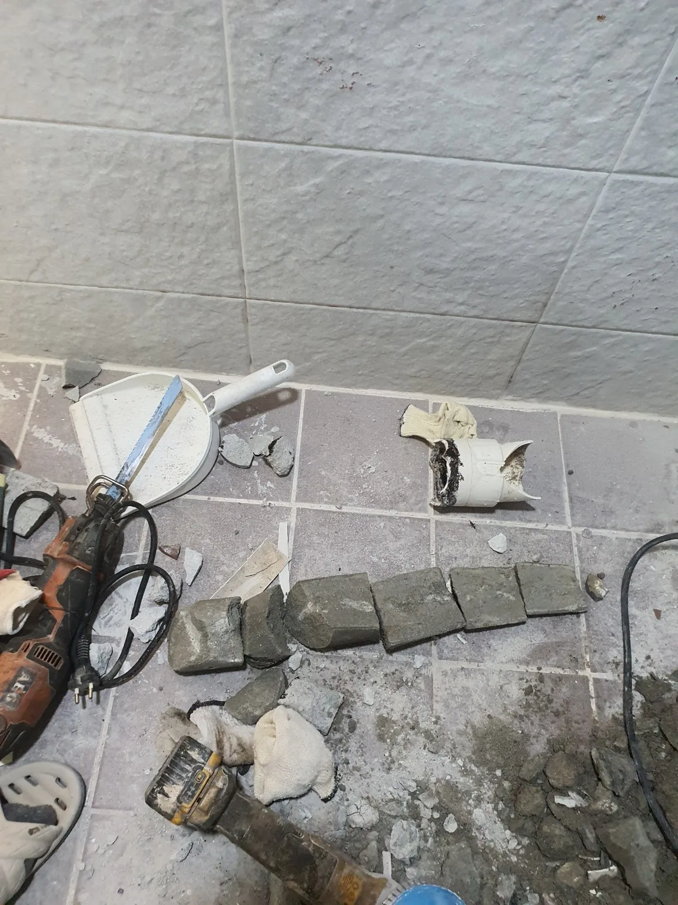
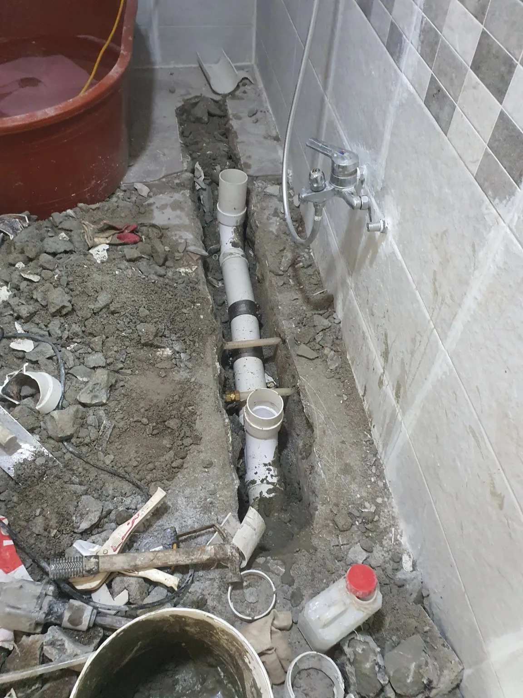

송파구 거여동 배관공사, 현장 도착 후 진단
송파구 거여동 욕실 하수구막힘 요청을 접수한 신라건축설비는 배관 점검과 매립배관 공사에 필요한 장비를 준비해 현장으로 출동했습니다. 숙련된 하수구막힘 전문 기술자가 배수 상태와 배관 구조를 점검한 결과, 머리카락이나 생활 슬러지로 발생한 일반적인 막힘과는 다른 강한 저항이 확인됐습니다.
물길을 일시적으로 뚫더라도 단단한 고형물이 배관 내부에 남아 있으면 정상적인 배수 단면을 확보하기 어렵습니다. 무리하게 관통 장비를 반복해서 사용하면 PVC 배관이 파손될 위험도 있어, 정확한 원인을 확인하기 위해 욕실 바닥의 매립배관을 직접 개방하기로 했습니다.
1단계: 증상 확인과 필요한 장비 작업
먼저 욕실 내부의 작업 범위를 정하고 전동 해머드릴로 바닥 타일과 하부 콘크리트를 순차적으로 철거했습니다. 벽면과 수도시설, 주변 마감재가 손상되지 않도록 배관이 지나가는 경로를 따라 필요한 폭만 굴착했습니다. 바닥 아래에 묻혀 있던 기존 PVC 하수배관이 드러나자 각 배수구의 연결 위치와 배관 방향을 확인했습니다.
문제가 의심되는 PVC 배관을 절단해 내부를 살펴보니 회색 몰탈이 단단하게 굳어 배관 통로를 막고 있었습니다. 일부 몰탈은 배관 안쪽 형태 그대로 길쭉하게 굳어 있어 밖으로 꺼냈을 때 배관 모양이 그대로 남아 있었습니다. 이는 단순히 작은 몰탈 조각이 걸린 정도가 아니라 배관 내부에서 몰탈 자체가 굳어 하나의 마개처럼 물길을 차단한 상황이었습니다.

2단계: 원인 구간 처리와 정상 작동 확인
몰탈이 굳은 기존 PVC 배관과 오염된 연결 부속을 절단해 철거했습니다. 배관 일부에 구멍만 내는 방식으로는 남은 몰탈과 단면 축소 문제를 해결하기 어려워, 문제가 발생한 매립 구간을 새 배관으로 교체하기로 했습니다.
새 PVC 하수배관을 기존 메인 배관과 연결하고 욕실 내 각 배수구 위치에 맞춰 분기관을 구성했습니다. 물이 자연스럽게 흘러가도록 배관 높이와 구배를 세밀하게 조정하고, 바닥 복구 과정에서 배관이 움직이거나 처지지 않도록 구간별로 안정적으로 고정했습니다. 시공을 마친 뒤 각 배수구에서 충분한 양의 물을 흘려보내 연결부 누수와 배수 속도, 역류 여부를 확인했습니다.

작업 결과와 재발 방지 안내
몰탈로 막힌 기존 배관을 철거하고 새 PVC 하수배관으로 교체한 뒤 욕실의 물이 정체되지 않고 정상적으로 배출되는 것을 확인했습니다. 배관 안에서 굳은 몰탈은 약품이나 뚫어뻥으로 녹일 수 없으며, 상태에 따라 관통기나 샤프트만으로도 완전히 제거하기 어렵습니다. 무리한 장비 사용은 배관 파손으로 이어질 수 있으므로 배관 내부의 고형물 위치와 범위를 정확히 진단해야 합니다.
욕실이나 주방을 공사할 때는 젖은 몰탈과 시멘트물이 배수구 안으로 들어가지 않도록 입구를 확실히 막아야 합니다. 공사 이후 갑자기 배수가 느려지거나 단단한 물체에 장비가 걸리는 증상이 나타난다면 배관 내부의 건축자재 유입 가능성도 함께 확인하는 것이 좋습니다.
신라건축설비는 송파구 거여동을 비롯한 서울 전 지역과 경기권에 신속하게 출동하여 욕실 하수구막힘·싱크대막힘·변기막힘을 전문적으로 해결합니다. 석션·관통·샤프트로 해결할 수 있는 생활 막힘은 신속하게 처리하고, 배관 안에서 몰탈이 굳었거나 매립배관이 파손된 고난도 현장은 바닥 철거부터 PVC 배관 교체와 재시공까지 자체적으로 대응합니다.
최종 조치: 욕실 바닥 타일과 콘크리트를 철거해 매립배관을 노출하고, 내부에 몰탈이 굳은 기존 PVC 배관을 절단·철거했습니다. 이후 배수구별 분기와 구배를 고려해 새 PVC 하수배관을 시공하고 통수검사 후 바닥 복구가 가능하도록 마무리했습니다.
현장 방문 전 확인하는 비용과 작업 범위
신라건축설비는 현장 증상과 배관 구조를 확인한 뒤 필요한 작업과 예상 비용을 안내합니다. 단순 관통으로 해결되는지, 배관내시경·석션·고압세척 또는 추가 장비가 필요한지는 현장 상태에 따라 달라집니다. 출장비와 야간 작업비, 추가 장비 비용이 발생할 수 있는 경우 작업 전에 먼저 설명하고 동의를 받은 범위에서 진행합니다.
업체를 선택할 때 확인할 사항
무조건적인 ‘0원’ 표현보다 실제 작업 범위, 추가 비용 조건, 사용 장비와 사후 대응 기준을 확인하는 것이 중요합니다. 해결되지 않았을 때의 비용 기준과 작업 후 동일 증상 발생 시 점검 범위를 사전에 문의해두면 불필요한 분쟁을 줄일 수 있습니다.
송파구 배관공사 자주 묻는 질문
공사 전에 견적을 받을 수 있나요?
욕실 바닥 배수구의 물이 원활하게 빠지지 않고 심한 배수 불량이 반복됐습니다. 일반적인 하수구 관통작업으로는 막힌 구간을 통과하기 어려웠으며, 단단한 고형물이 매립배관 내부를 막고 있는 것으로 의심되는 상태였습니다.처럼 증상이 나타나더라도 원인은 현장마다 다를 수 있습니다. 장비와 배관 구조를 확인한 뒤 필요한 작업 범위를 안내합니다.
추가 공사가 생기면 바로 진행하나요?
작업 전 증상과 현장 여건을 확인해 예상 범위와 비용을 먼저 안내합니다. 변기 탈거, 장비 추가 투입 또는 공용배관 작업이 필요한 경우 고객 동의 없이 임의로 진행하지 않습니다.
작업 후 A/S는 어떻게 되나요?
완료 후 정상 작동을 함께 확인하고 작업 범위에 따른 사후 안내를 드립니다. 동일 증상이 반복되면 현장 기록을 기준으로 원인을 다시 점검합니다.
배관공사 서울·경기 출동지역
신라건축설비는 송파구 거여동 현장을 포함해 서울 25개 구와 경기도 31개 시·군의 배관 문제를 상담합니다. 현장 거리와 기사 배정 상황에 따라 출동 가능 여부를 먼저 안내드립니다.
서울 전 지역
강남구 · 강동구 · 강북구 · 강서구 · 관악구 · 광진구 · 구로구 · 금천구 · 노원구 · 도봉구 · 동대문구 · 동작구 · 마포구 · 서대문구 · 서초구 · 성동구 · 성북구 · 송파구 · 양천구 · 영등포구 · 용산구 · 은평구 · 종로구 · 중구 · 중랑구
경기도 주요 출동지역
수원시 · 용인시 · 고양시 · 화성시 · 성남시 · 부천시 · 남양주시 · 안산시 · 평택시 · 안양시 · 시흥시 · 파주시 · 김포시 · 의정부시 · 광주시 · 하남시 · 광명시 · 군포시 · 양주시 · 오산시 · 이천시 · 안성시 · 구리시 · 의왕시 · 포천시 · 양평군 · 여주시 · 동두천시 · 과천시 · 가평군 · 연천군